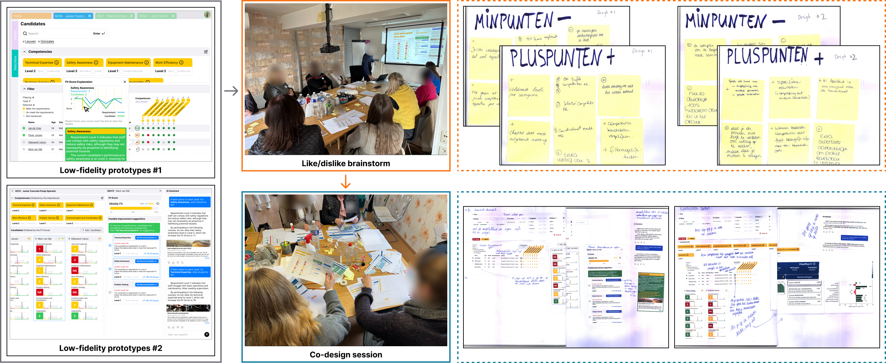
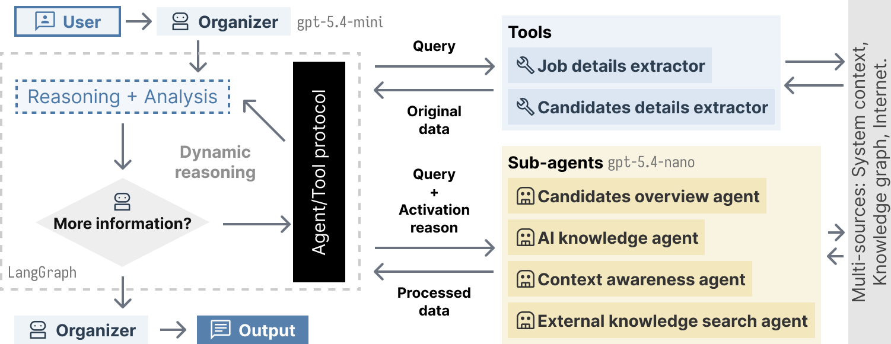
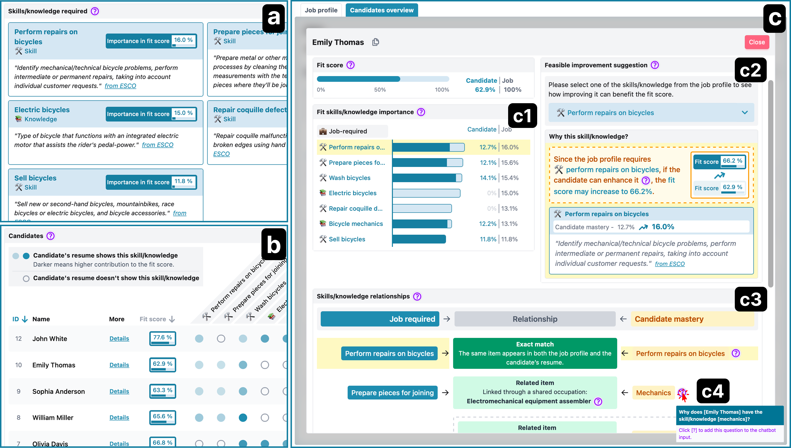
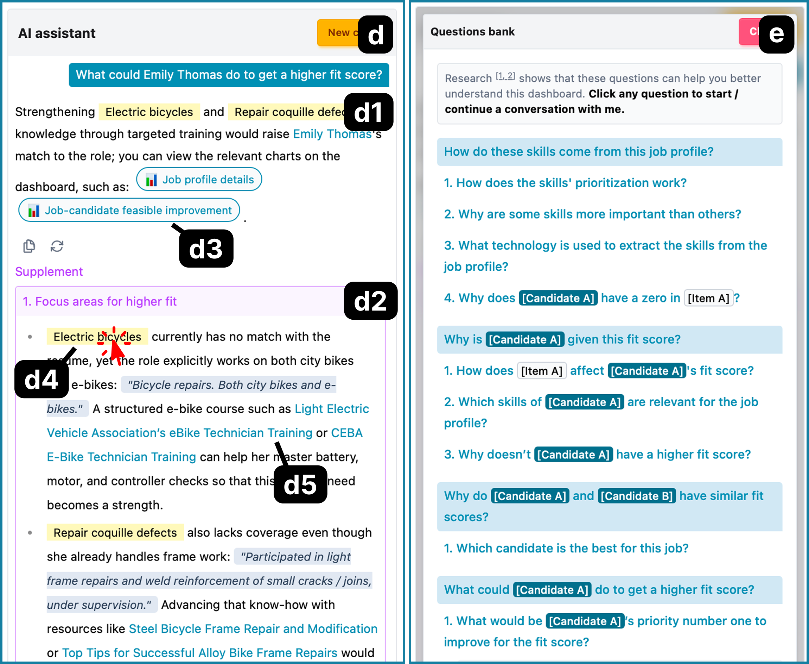

CAPTURE: A Visual–Conversational Dashboard for Supporting User-Driven Explanations in a Job–Candidate Matching Algorithm
Abstract
While substantial work has focused on explaining job–candidate matches in recruiting, a gap remains between these explanations and end-user goals, with visual explanations often being complex and overwhelming. Moreover, existing approaches are often static and provide limited interaction support, making it difficult for users to explore explanations in a way that matches their information needs. Guided by a human–centered design process, we present CAPTURE, a visual–conversational dashboard designed to support on-demand explanations in job–candidate matching. It integrates visual explanations with a conversational component powered by a multi-agent architecture that interprets user queries and orchestrates data retrieval and analysis workflows. By linking rich textual responses with relevant visualizations, CAPTURE enables flexible exploration and supports user-driven explanations in job–candidate matching algorithms.

Plot illustrating the flow of the co-design workshop for identifying user requirements and deriving design insights of the visual-conversational dashboard.

Plot illustrating the multi-agent architecture of the conversational modality.

Screenshots illustrating the visual modality of the dashboard: (a) Job profile; (b) Candidates overview; (c) Candidate details.

Screenshots illustrating the conversational modality of the dashboard: (d) Chatbot; (e) Question bank.
Dashboard Demonstration
BibTeX
@inproceedings{zhang2026capture,
title = {CAPTURE: A Visual--Conversational Dashboard for Supporting User-Driven Explanations in a Job--Candidate Matching Algorithm},
author = {Zhang, Yizhe and De Croon, Robin and Szymanski, Maxwell and Verbert, Katrien},
booktitle = {UMAP '26: Proceedings of the 34th ACM Conference on User Modeling, Adaptation and Personalization},
year = {2026},
publisher = {Association for Computing Machinery},
doi = {10.1145/3774935.3812705},
url = {https://doi.org/10.1145/3774935.3812705}
}